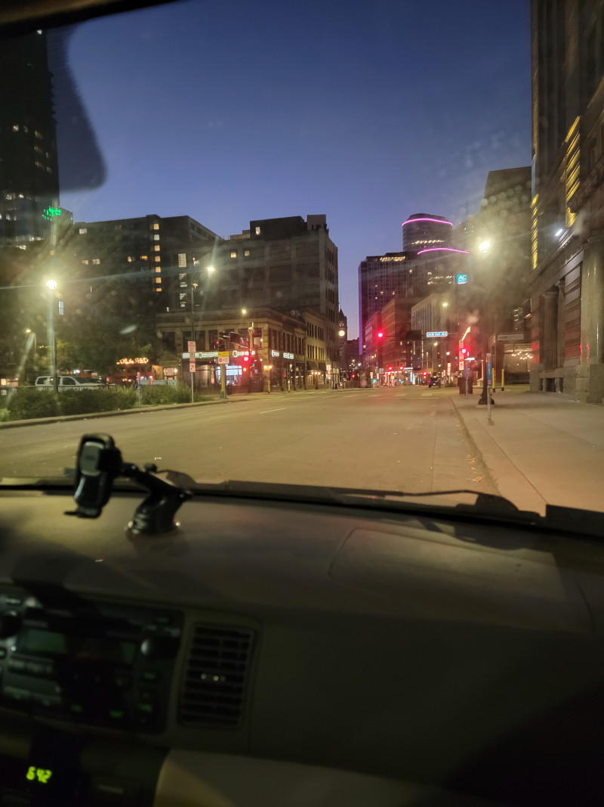
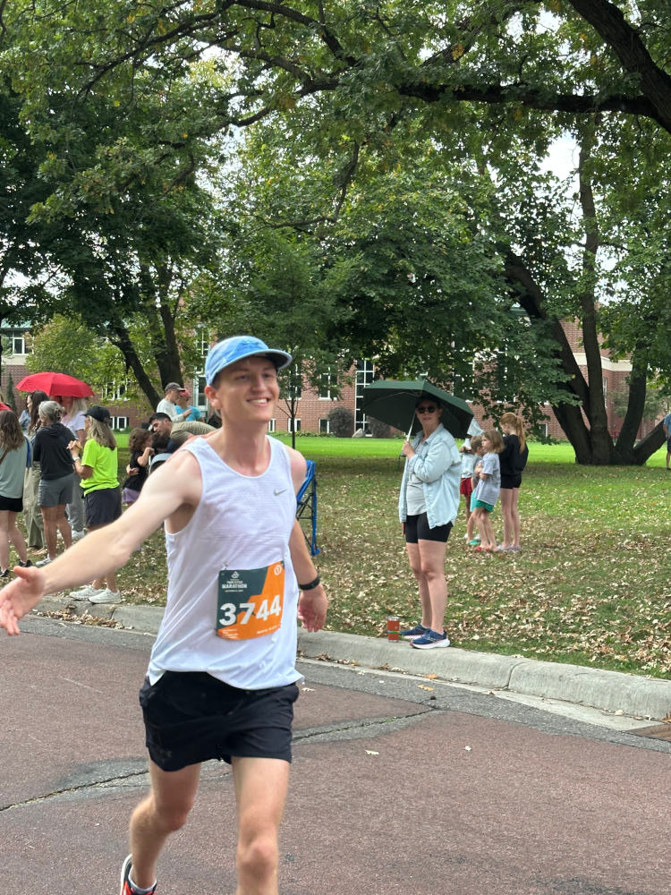
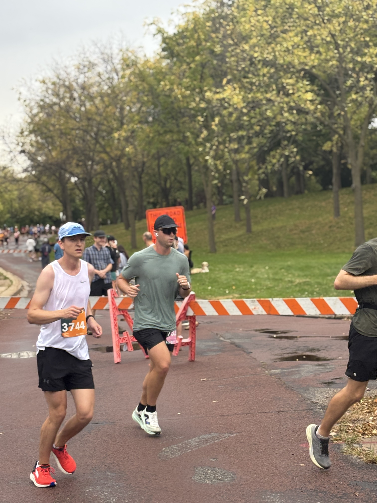
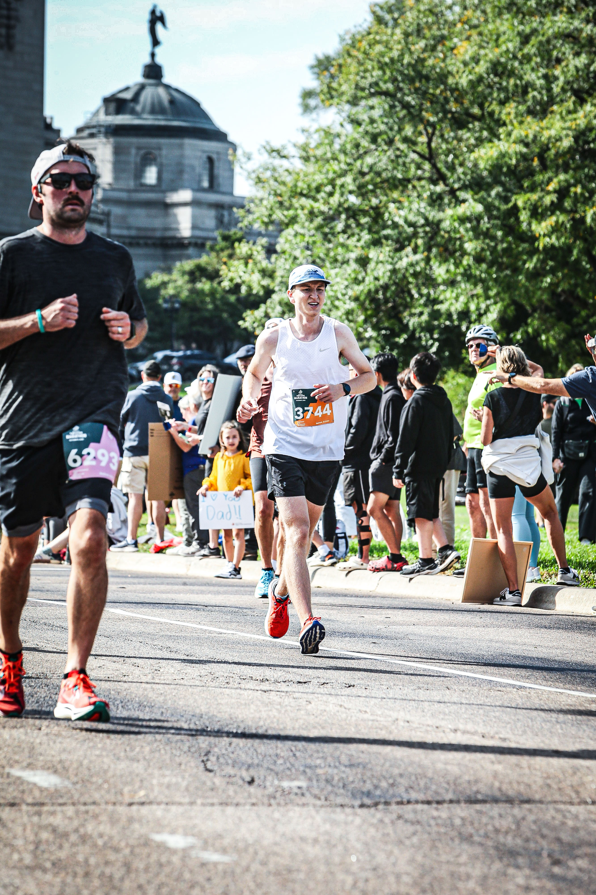
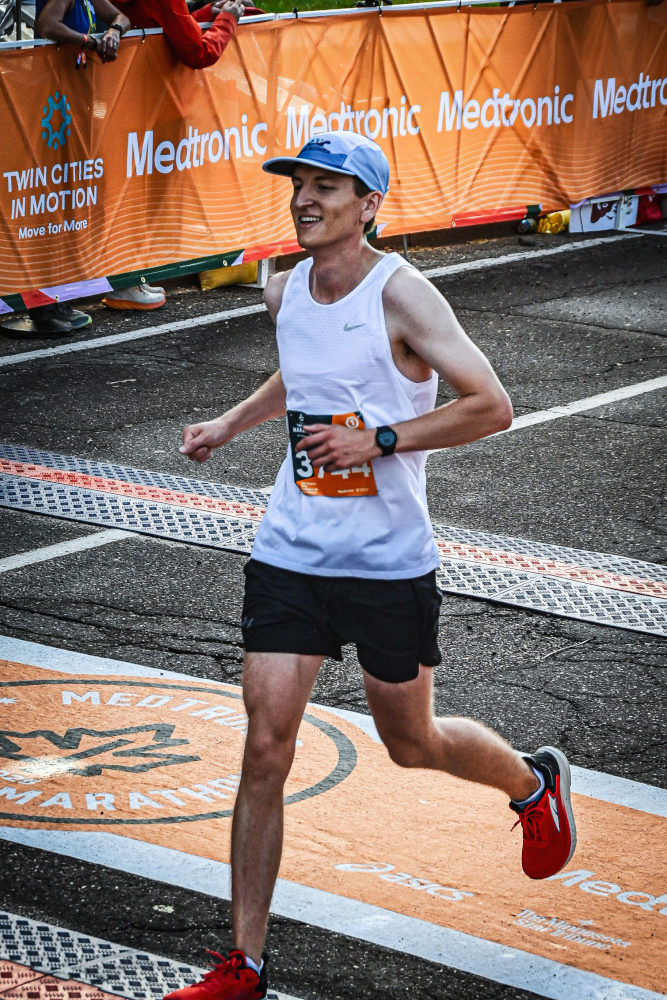
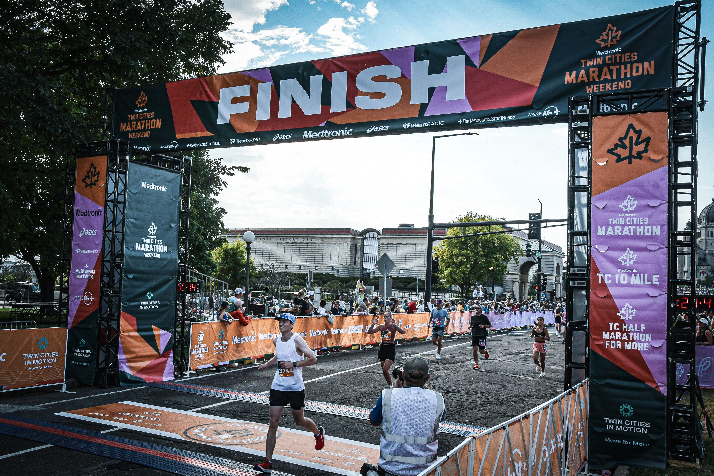
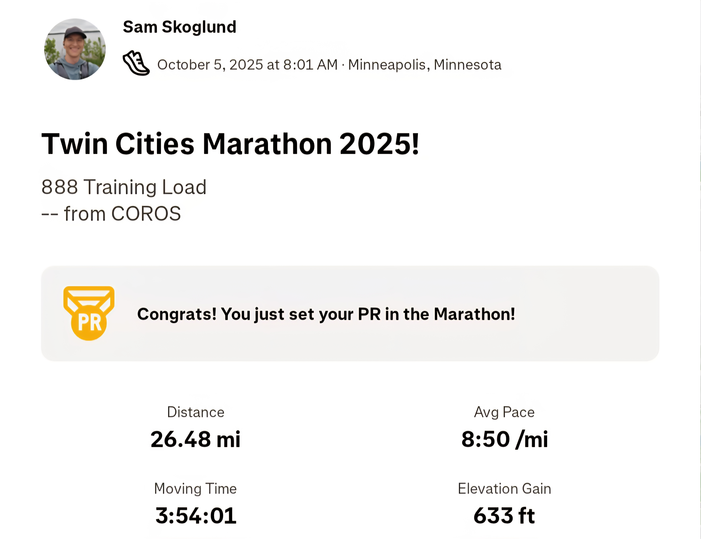
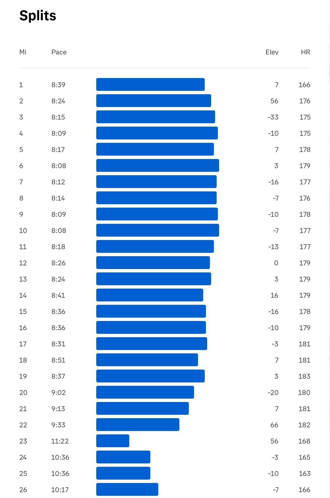
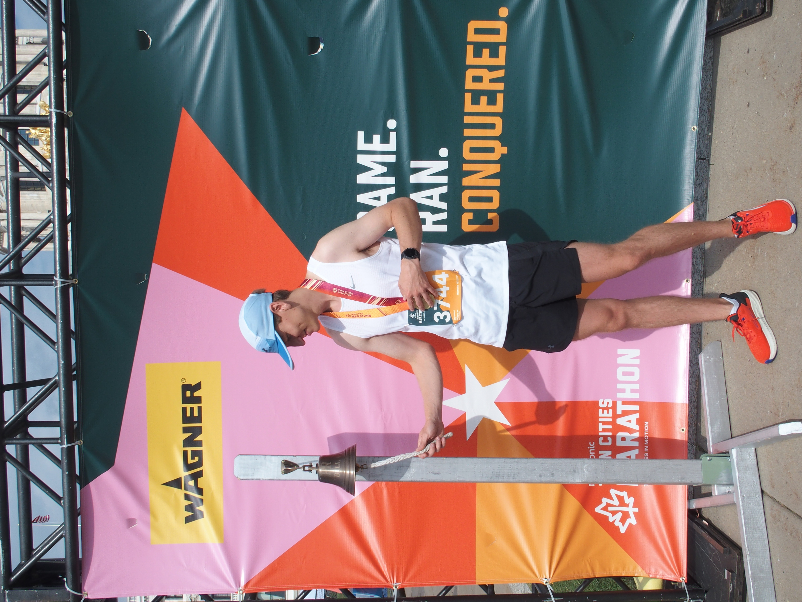

09 min read
Experience Report
Earlier this year, I finished my first marathon, Grandma's Marathon, which I wrote about here. To catch you up to speed, it did not go as well as I hoped, and so I immediately signed up for the Twin Cities Marathon to get redemption. The race was this past weekend and I'm thrilled to report that redemption has been achieved!
Training properly was a challenge since there were only 15 weeks between the two races. Initially I was motivated to up my game a bit by adding in some more strength training and some speed work, but I quickly realized that it would be too much. My body was just too beat from the first go-round. In hindsight, I probably should've fully rested for a couple weeks at the start, but I couldn't hold myself back. Nothing motivates me as strongly as failure does. So I started working hard immediately, and for the first 6 weeks, unsurprisingly, I felt exhausted all of the time. Eventually I realized it was unsustainable, so I finally forced myself to take it easy for a couple weeks. During that time I was thinking I might have to bail, which had me feeling pretty down, but then, as I increased the mileage again, I found myself feeling much more energetic. The motivation came back, and the last 6 weeks were pretty solid.
Just before taper time, I was feeling especially good, so I spontaneously turned a random weekday run into a 10 mile PR. The adrenaline was amazing and I don't regret it at all, but logically, it was a terrible choice, because it left me too tired to complete the 20 miler that weekend, which is maybe the most important run in the whole training plan. Oops!
The one thing I did improve on a lot this time around was nutrition. I tried out a bunch of goos, which was an adventure in itself... felt like playing russian roulette as I went through the full sampler. There was this one caffinated one that tasted like the smell of gasoline, destroyed my gut, and made both my ears pressurize as if I was at altitude. Kinda freaky. Eventually I learned I'm a Honey Stinger fanatic. They taste good since they're pretty much just natural honey, they wash down easily, and they have an even ratio of fructose and glucose, which means you can absorb them really efficiently because those two sugars have independent absorption pathways. They seem like the clear winner to me in the endless sea of options.
Overall it was a pretty messy training cycle, but hey, it worked well enough for me to PR by a lot and learn some new things.
The morning of the race went splendidly.
Despite being the opposite of a morning person, I found myself feeling fully energized right after waking up. A full night's sleep in my own bed was a welcome change compared to the zero sleep I got before Grandma's.
Getting to the start was shockingly easy. My sister and her boyfriend stayed at my apartment the night before and drove me in the morning. Made me feel very special. We thought there might be a ton of traffic, so we left very early, but surprisingly it was clam all the way to the start line. We ended up pulling over a bit early so I could hang out in the car instead of standing around.

A bagel with just a bit of cream cheese and a Naked brand "Blue Machine" smoothie for breakfast.
I watched the last wave of 10 milers start, hit the porta potty, and got in the corral.
As I chit chatted with a couple people and looked around, I was hit with a happy realization. A marathon has got to be one of the most dense gatherings of healthy people. There were like 2300 of us in my corral, and everybody was super fit. The physical fitness was the easiest to pick up on, but the more I paid attention the more I realized it went well beyond that. Just making it through training and making it to the start line requires a certain level of mental health. Everyone was full of energy, excited and confident for the race to come. 2300 people who have "made it" if that makes any sense. In day to day life it's easy to look around and feel like society's collective psyche is sinking rapidly, but this refreshed my perspective. This positivity I'm describing was captured well by a sign that I saw multiple spectators holding, which read "You are all so hot!" or similar. The first time I saw it, I was like Yes! We are all so hot!
There were a lot of other aspects of this event that felt similarly like an antidote to cynicism. Tons of people who live along the route came out to play music or cheer or give us ice or spray us with their hoses, even though they didn't look like runner types themselves. Some strangers even read my name off my bib and cheered for me when I was struggling near the end. Medtronic sponsored the whole thing even though healthy people are enemies to their business metrics. Tim Walz, the governor of Minnesota, gave out high fives during the 10k and then ran the 10 mile.
Immaculate vibes all around.
The announcer said some things that none of us could hear over the music, and then we were off! Since I died so badly half way through the first marathon, I decided to take a different approach this time. Instead of paying attention to pace, I looked only at heart rate, and just ran as fast as I could while staying just below 180 bpm. I probably checked my watch like 260 times throughout the race in order to stick to this plan. Kind of silly but whatever. The miles flew by, quicker than I've ever felt before. I swear the first 6 or so felt like 1, and I knew by that point that I was cruising towards an easy PR.
Once I got settled in, I unfurrowed my brow, took in my surroundings, and just enjoyed the ride. The signs people held provided great entertainment:
Every few miles I was cheered on by people I know. I must admit that historically I have not been that receptive of encouragement during races, usually thinking to myself argh, why are you cheering me on, I'm doing terrible! But since this race was going well, I loved it and for the first time found that it actually helped me push harder. Each time I saw my friends or family I sped up for a little while afterwards. My friends Noah and Jon were around the 4 mile mark, and my family a few spots throughout. Here's me about to high five the family.

I thought I would be alone for the worst miles near the end, but then to my surprise I heard a familiar voice yelling my name. I looked over to see Zak, one of the guys from a running group I go to, leaning over the handlebars of his bike and cheering me on with contageous intensity. It put the smile back on my face and gave me the energy I needed to grind through. It was also a nice reminder that I'm more connected than I sometimes realize. I don't know Zak that well and yet he took the time to look up my bib number and find me to cheer me on. Thank you, Zak.
Much to my delight, I found that I was still cruising along quite comfortably at the 20 mile marker. The dreaded 3 mile long hill began and I managed to keep the pace respectable for most of it, but near the top my stamina rapidly declined. I walked for a bit at the next aid station and then survival shuffled for a couple more miles. It was a running motion but probably not much faster than fast walking.

When I could see the top of the capital in the distance, I forced myself to speed up as much as I thought I could without risking falling over before the finish. This is the first time I've felt the feeling where some of your muscles stop responding normally to your desires, which I think means that I got the overall pace just about right. Any slower and I would have had more left in the tank; any faster and I would have had to walk more.

The final straightaway was a nice gradual downhill, and then I was at the finish line. I'm not one to gesture wildly, but let me tell you that the smile on my face in this finish line picture is as genuine as it gets. I was ecstatic.


Here's the Strava for proof.


Here's me ringing the PR bell.

In my first marathon write up, I talked about how the book Born to Run inspired me to take running to the next level because of it's bold claims about the benefits. So, now that I've been doing this endurance running thing diligently for 7 months, do I think Christopher McDougall was right? Do I think endurance running is the answer to the ultimate question of life, the universe, and everything? Well, it's certainly a better answer than 42.[1]
In all seriousness, I do he think he is on to something, and it became more obvious than ever to me during the first long run I went on after this marathon. As I cruised along effortlessly with my friend Ben, I had a thought. Easy long runs with good company are one of the most blissful forms of relaxation that I've encountered in life so far. I think that and the thoughts I've sprinkled in to this writeup and the last one give you my answer. Running really is something special.
Before this marathon, I thought there were two possible outcomes. I thought I'd either fail again and sign up for a third for another shot at redemption, or succeed and never feel the desire to run another ever again. I never expected that it would go well AND I would feel inclined to go again, but that is exactly how I'm feeling in the days after.
Like I mentioned in my previous post, it feels like there are three levels of completing a marathon. You can finish it, run it, or race it. The first time, I finished, and this time, I ran. I thought racing one would always seem too difficult to be appealing. I thought I'd never want to be focused enough on this hobby over all others to get to that point. I had resolved to just do some half marathons to satisfy that race feeling. But now the temptation just can't be ignored. I'm trying to force myself to wait a bit to make sure my current emotion sticks, but I really just want to sign up right this second for next year's Twin Cities Marathon. The doomscrolling algorithm fed me this reel right after the race and it couldn't be more spot on. It sure feels like this might be the beginning of an addiction.